Katalog
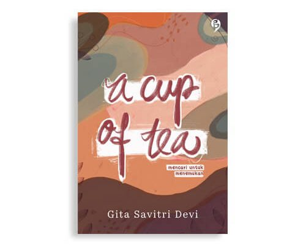 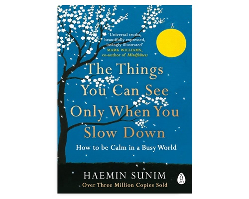 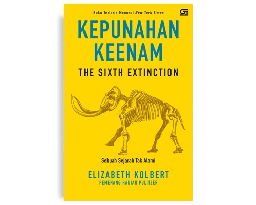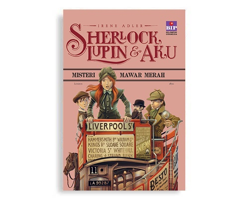 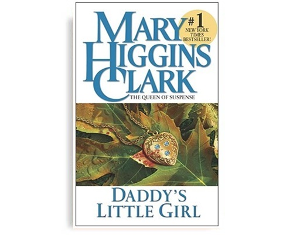 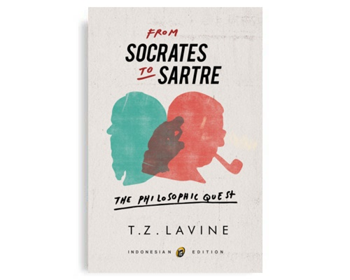 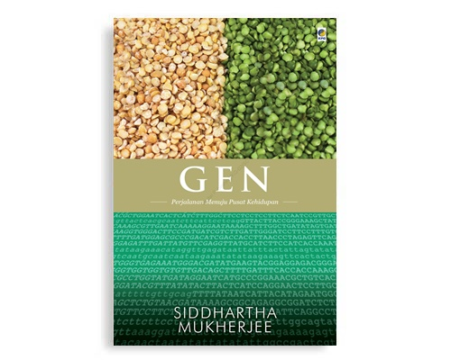
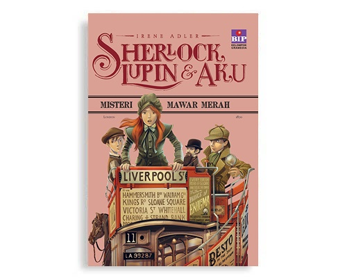 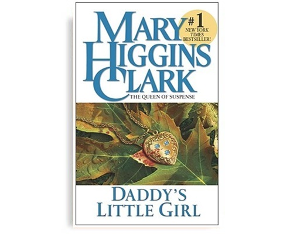 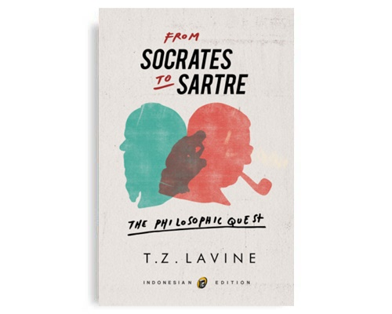 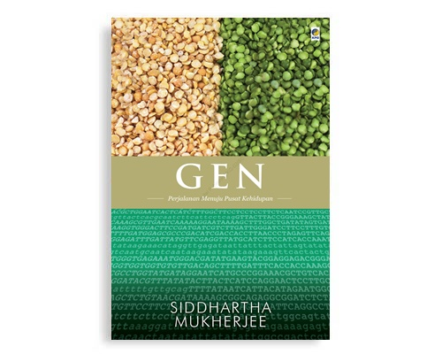
Guru Aini
Rp. 99.000
Ini persamaan hidupku sekarang, Bu,” Desi menyodorkan buku catatan ke tengah meja. Bu Amanah, yang juga guru matematika, tersenyum getir melihat persamaan garis lurus dengan variabel-variabel yang didefinisikan sendiri oleh Desi, x1: pendidikan, x2: kecerdasan. Yang menarik perhatiannya adalah konstanta a: pengorbanan.Pendidikan memerlukan pengorbanan, Bu. Pengorbanan itu nilai tetap, konstan, tak boleh berubah.
Ragam Akalbudi
Rp. 80.000
Manusia dikatakan istimewa karena memiliki akalbudi (mind). Namun apakah hanya manusia yang punya akalbudi? Daniel C. Dennett memadukan filsafat, ilmu biologi saraf, evolusi, dan gagasan kecerdasan buatan untuk membahas banyak pertanyaan menarik terkait akalbudi: Apakah kita bisa yakin semua manusia punya akalbudi? Mungkinkah hewan, tumbuhan, bahkan mesin punya akalbudi? Apa hubungan akalbudi dengan pengetahuan, bahasa, penderitaan? Barangkali, apa yang kita pikir kita ketahui mengenai akalbudi layak ditinjau kembali, berdasarkan gagasan sains dan filsafat terbaru, agar kita bisa mempertajam pertanyaan-pertanyaan besar mengenai akalbudi.
Daddy's Little Girl
Rp. 45.000
Ketika Ellie Cavanaugh berusia delapan tahun, kakaknya, Andrea, tewas dibunuh di dekat rumah mereka di Oldham-on-the-Hudson, Ada tiga tersangka: Rob westerfield, pemuda tampan dari keluarga kaya setempat, yang diam-diam menjalin hubungan dengan Andrea; Paulie Stroebel, teman sekelas yang diam-diam mencintai Andrea; dan Will Nebels, pekerja serabutan yang suka menawarkan jasa kepada para tetangga.".
Auguste Dupin
Rp. 39.000
Mungkin banyak yang mengira bahwa Sherlock Holmes adalah pionir tokoh detektif fiksi di dunia literasi. Tapi tahukah bahwasanya jauh sebelum Sherlock Holmes muncul, ada tokoh lain yang lebih dulu memulai dan menyandang predikat gentlemen detective?. Yup, tokoh detektif fiksi pertama di dunia literasi yang mengguncang dunia sastra pada eranya adalah C Auguste Dupin. Tokoh detektif ini merupakan rekaan sang penulis puisi dan cerita misteri beraliran gore, gothic dan macabre sekaligus kritikus sastra terkenal pada eranya, Edgar Allan Poe."
Harry Potter and The Half Blood Prince
Rp. 99.000
Khawatir dengan pengalaman pertemuannya dengan Voldemort di Kementerian Sihir, Harry Potter merasa enggan untuk kembali ke Hogwarts. Dumbledore mendorongnya untuk kembali, setelah mengajaknya untuk menemui seorang mantan guru Hogwarts, Horace Slughorn. Dengan bantuan Harry, ia berhasil membujuk Slughorn agar mau kembali mengajar di Hogwarts.
The Hobbit
Rp. 89.000
Kisah bermula ketika Bilbo baggins yang merupakan seorang hobbit yang ingin hidup nyaman, sejahtera di liang hobbitnya, dan hampir tidak pernah bepergian jauh dari rumahnya di shire. suatu hari Gandalf datang ke rumahnya dan mengajaknya untuk berpetualang, dan Bilbo dengan jelas menolaknya. hingga ketika Gandalf mengundang 13 Kurcaci untuk datang ke rumah Bilbo dan terjadilah sebuah pesta yang tak terduga.
TokoBuku adalah salah satu tempat belanja buku online yang dibangun untuk menjual produk- produk berupa buku terupdate dan terlengkap. Baik anda kawula muda maupun tua cocok untuk mencari dan membeli buku-buku yang anda inginkan tanpa harus keluar rumah anda, anda hanya tinggal membuka website kami dan bisa anda pesan langsung buku-buku yang ada di katalog kami, kami siap antar ke tempat anda
Keuntungan belanja di TokoBuku:
1. Sangat mudah memilih buku yang anda cari berdasarkan kategori
2. Kolom pencarian memudahkan anda untuk mencari buku sesuai keinginan anda
3. Kami akan selalu berusaha memberikan pelayanan yang cepat dan murah untuk pencinta buku di tanah air